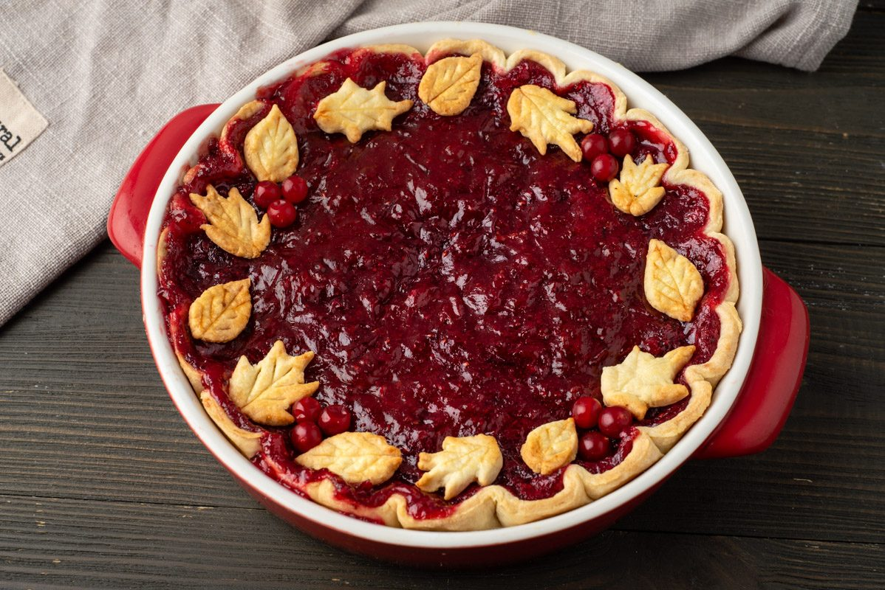

CRUSTLESS CRANBERRY PIE

This crustless cranberry pie is a light, delicious holiday dessert that's super simple to
make with fresh or frozen cranberries. Serve warm with whipped cream or ice cream.
INGREDIENTS
- 1 cup all-purpose flour
- 1 cup white sugar
- ¼ teaspoon salt
- 2 cups cranberries
- ½ cup chopped walnuts
- ½ cup butter, melted
- 2 large eggs, beaten
- 1 teaspoon almond extract
STEPS
- Preheat the oven to 350 degrees F (175 degrees C). Grease a 9-inch pie pan.
- Combine flour, sugar, and salt in a bowl. Add cranberries and walnuts, and toss to coat.
Stir in melted butter, beaten eggs, and almond extract. Spread the batter into the prepared pan.
- Bake in the preheated oven until a toothpick inserted near
the center comes our clean, about 40 minutes. Serve warm.
Back to recipes